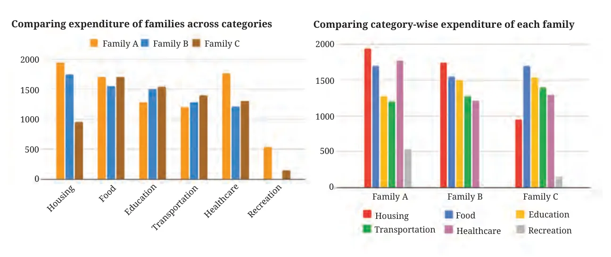
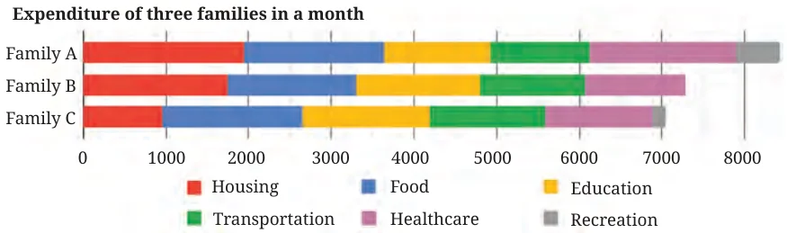

10.2.1 Stacking Columns
The following table shows the average weekly expenditure, in rupees (₹), of three families across categories. What would a cluster-column chart for this data look like?
| Housing | Food | Education | Transportation | Healthcare | Recreation | |
|---|---|---|---|---|---|---|
| Family A | 1940 | 1700 | 1280 | 1200 | 1770 | 535 |
| Family B | 1750 | 1546 | 1500 | 1280 | 1210 | 0 |
| Family C | 950 | 1700 | 1540 | 1400 | 1300 | 150 |
There are two possibilities depending on the choice of the cluster; the clusters can be categories or families:

Answer the following questions based on the charts above. Try to answer each question by looking at Choice 1 first, and then Choice 2. Which was easier?
- Which family spent the least on housing?
- Which family spent the most on healthcare?
- Approximately how much did Family A spend on education?
- Which category did Family B spend most on?
- Did Family A spend more on food or on healthcare?
You may have found Choice 1 more suitable to answer Questions 1 and 2, and Choice 2 more suitable to answer Questions 4 and 5.
The choice of the cluster-column chart depends on what the primary focus is — comparing different families’ expenditures in each category (Choice 1) or comparing category-wise expenditures within each family (Choice 2).
Find the answers to the following questions.
- Which family spent the least amount overall?
- Approximately how much did Family C spend overall?
- Approximately what percentage of Family C’s expenses were on housing?
Was it as straightforward to answer these questions as the earlier questions?
Is there a visualisation that makes it simpler to answer such questions?
Look at the following visualisation of the same data. Try to understand how the chart is organised and answer the three questions above.

Such a graph/chart is called a stacked bar or column chart. Bars within a cluster are joined one after the other in a particular order.
Stacked bar charts are used when we want to compare the totals but also want to keep track of the components that make up the totals. Here, the total length of a full stacked (combined) bar represents the total expenditure of a family in that month. Also, the length of a smaller bar and the full stacked bar can be compared to get an estimate of what fraction or percentage the smaller bar makes up of the full stacked bar.
Now, use the stacked bar chart to answer the Questions 1–5 shown earlier.
Is it possible? Is it easy? If not, what made it harder than before?
Except for the first small bar, the rest of the stacked small bars do not begin from 0. This makes it a little harder to estimate the quantity corresponding to a bar. Also, bars across clusters need not have a common base or a starting point. So, comparing bars within clusters and across clusters may be harder. However, seeing the totals of all the clusters is easier.